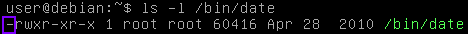
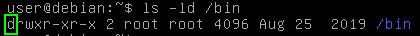

SUID & SGID files
• setuid (S
UID) bit
◇
file → will be executed with the privileges of the file
owner(user).
• setgid (S
GID) bit
◇
file → will be executed with the privileges of the file
group.
◇
directory →
files created within that
directory will inherit the group of the directory itself.
View permissionswe can use the command ls
user@debian:$ ls -l <file or directory>
The first 10 characters indicate the permissions set on the file or directory.
◇
First character indicates the type:
▪
- →
file  ▪
d →
directory  ◇
remaining 9 characters represent the 3 sets of permissions (owner, group, others)
▪ Each set contains 3 characters, indicating the permissions:
- read (r)
- write (w)
- execute (x) → SUID/SGID permissions are represented by an 's' in the permission bit where the execute permission normally reside
Octal permission representationread → r → 4
write → w→ 2
execute → x → 1
| rwx | octal rapresentation |
|---|
| --- | 0 |
| --x | 1 |
| -w- | 2 |
| -wx | 3 = 2+1 = write+execute |
| r--- | 4 |
| r-x | 5 = 4+1 = read+execute |
| rw- | 6 = 4+2 = read+write |
| rwx | 7 = 4+2+1 = read+write+execute |